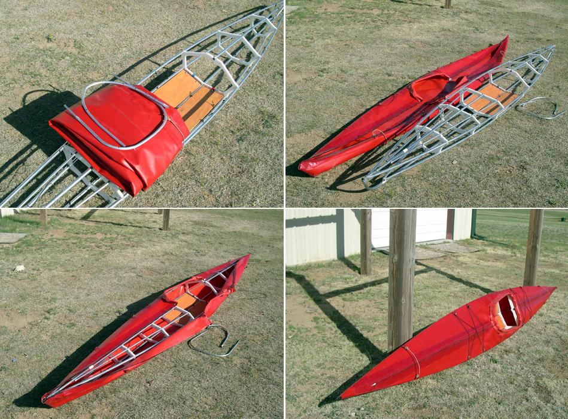

| Skin to Frame Assembly (9 of 9) | Menu Previous Page Next Page |
|
 After the frame is assembled, the Sea Otter skin is secured with fore and aft zippers. The 2 piece aluminum coaming is inserted in it's sleeve, and the deck rigging is attached. Complete frame and skin assembly takes less than 30 minutes. |
|